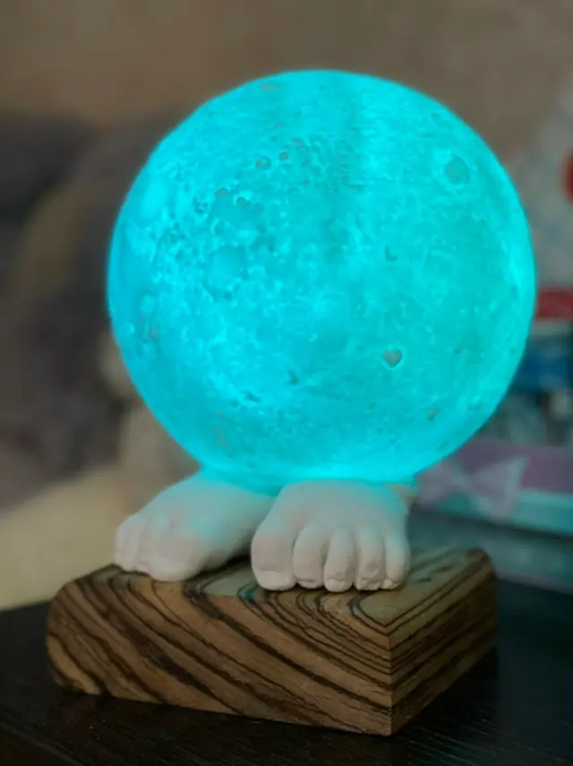

01
Индивидуальный слепок
Одна рука в любом жесте: открытая ладонь, кулак или знак победы. Классика проекта «Руки».
Стоимость — по запросуТовары и услуги
Каждая работа создаётся индивидуально. Композиция, выезд, срок и стоимость обсуждаются до начала проекта.
Одна рука в любом жесте: открытая ладонь, кулак или знак победы. Классика проекта «Руки».
Стоимость — по запросуДве руки, соединённые в одном жесте: рукопожатие, объятие или переплетённые пальцы.
Стоимость — по запросу
Ладонь ребёнка в натуральную величину. Трогательный способ сохранить период детства.
Стоимость — по запросуРуки родителей, детей и близких, объединённые в одной композиции и одной семейной истории.
Стоимость — по запросуСкульптура с личным предметом, профессиональным атрибутом или необычным авторским жестом.
Стоимость — по запросу
Авторская скульптура по мотивам каменных исполинов острова Пасхи. Для интерьера, сада или публичного пространства.
История проектаСтоимость — по запросуКак проходит работа
Илья приезжает лично, помогает выбрать жест и снимает слепок.
Вы рассказываете, для кого создаётся работа и какой момент хотите сохранить.
Согласуем место и время. Сам процесс проходит при личной встрече.
Форма отливается и дорабатывается вручную. Готовую работу передаём по договорённости.
Вопросы
Цена зависит от числа рук, сложности композиции, выезда и финишной обработки. Напишите Илье, чтобы получить расчёт.
Илья приезжает лично. Укажите город и желаемые даты — возможность и условия выезда будут согласованы отдельно.
Да. Мяч, музыкальный инструмент, очки и другие личные предметы могут стать частью авторской композиции.
Следующая история — ваша
Расскажите об идее. Обсудим композицию, выезд, сроки и стоимость.